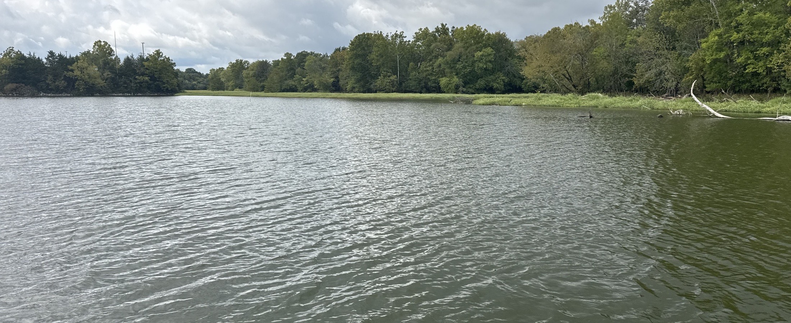
Bass fishing on J. Percy Priest with my grandson Aaron, who fishes the Tennessee BASS Nation high school trail for Mount Juliet. The lakes, the fish and the season — the waypoints stay in the boat.
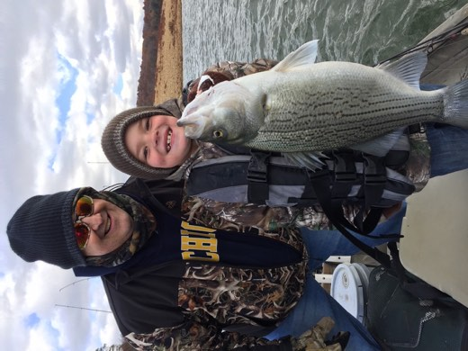
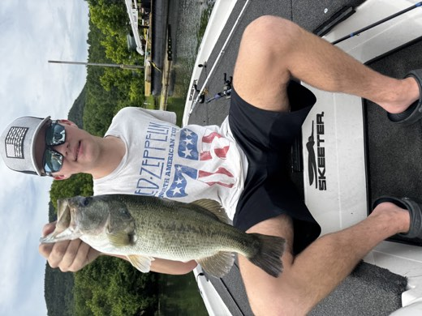
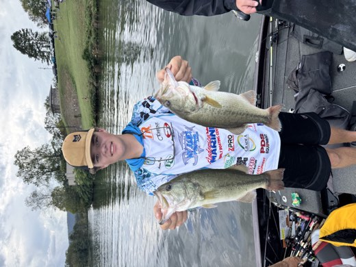
The home lake, ten minutes from the house — the only one where knowledge compounds fast enough to be worth deep notes. USACE reservoir on the Stones River, summer pool 490 ft, launched from Fate Sanders. Everything in this vault about how to read a spot was learned here.
Cumberland River impoundment north of Nashville, USACE. Long and riverine, so current and generation matter more than on Percy Priest. Nothing recorded yet beyond a handful of waypoints.
Deep, clear highland reservoir on the Caney Fork, USACE. The team has struggled here, especially on practice days — likely because the Percy Priest playbook does not transfer to clear highland water. Reachable for Steve, and knowledge earned here would transfer to Dale Hollow and Tims Ford, which he cannot reach.
Ultra-clear deep highland water on the Obey River, USACE — famous smallmouth country. The highest-leverage lake to learn well: the Central event on Mar 20 and the double-points State Championship on Mar 21 run from the same marina, so one practice investment covers two events.
Deep clear highland reservoir on the Elk River, TVA. Same finesse game as Center Hill and Dale Hollow. No data yet.
Small TVA impoundment on the Duck River. Class deliberately unresolved — Steve doesn't know how it fishes and a wrong classification would transfer the wrong playbook. Four on-the-water observations in the note settle it on the first trip.
Tennessee River impoundment, TVA. Grass, ledges and current, with a reputation for giant largemouth. East trail. Two waypoints and nothing else.
Tennessee River impoundment below Chickamauga, TVA. Smaller and strongly current-driven — generation schedule likely matters more than weather. One waypoint.
Tennessee River impoundment, TVA, East trail. Ledges and creek arms. Ten waypoints already recorded — the most data of any lake outside Percy Priest, including STUMP COVE, ROCKS and a 3 FISH mark.
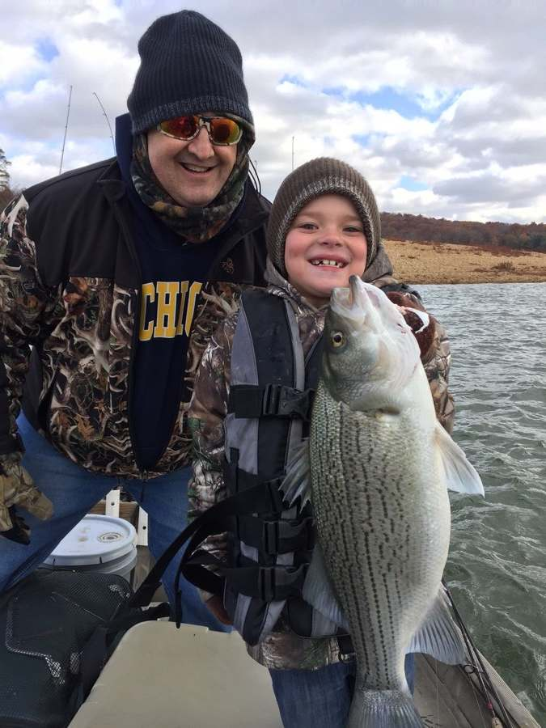
Aaron, about seven, with a hybrid striped bass. The oldest photo we have.
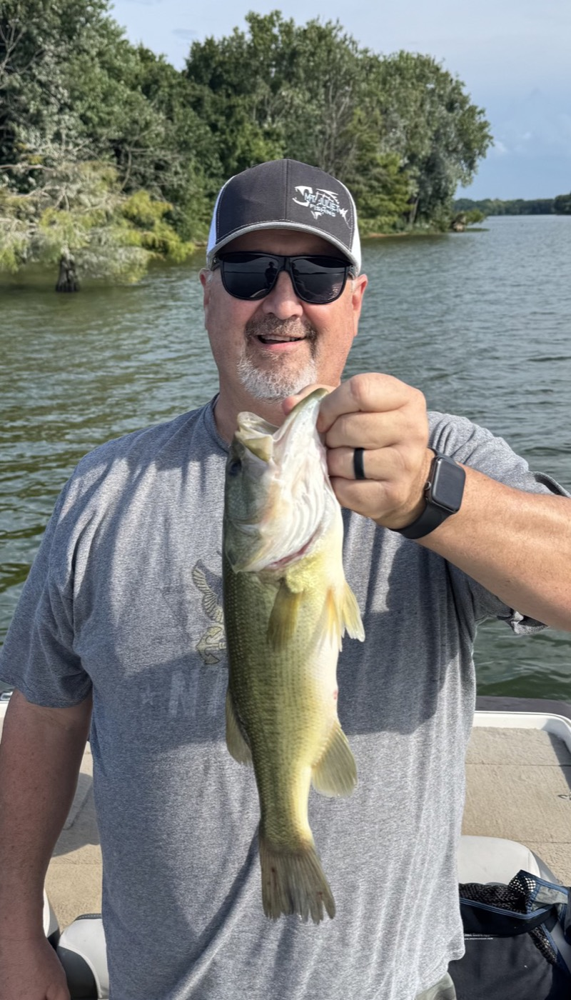
A good largemouth off a shallow flat in 88°F water. Cypress on the bank.
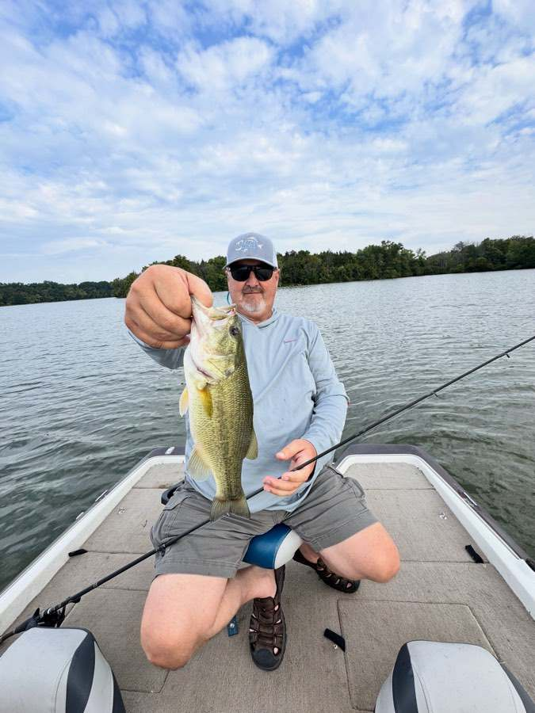
About three pounds, caught near the charted rock in Fall Creek.
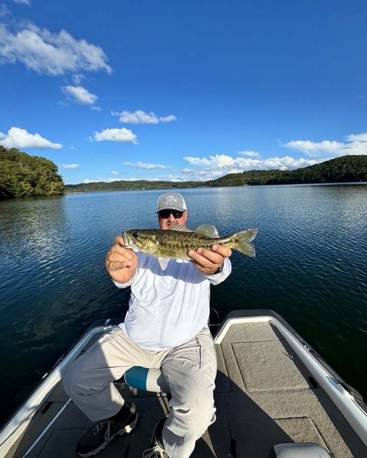
Smallmouth on the evening we arrived, before the tournament weekend.
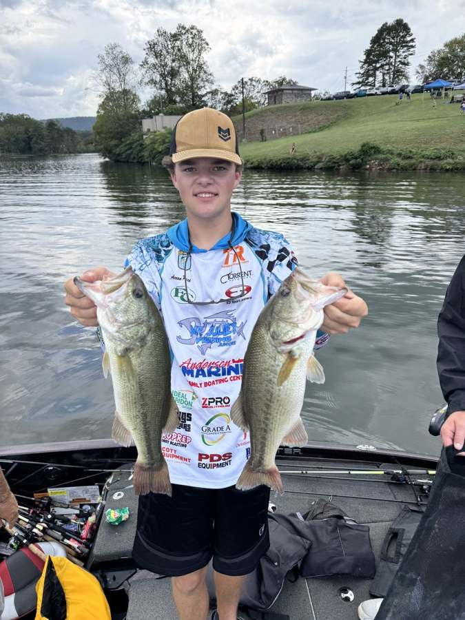
Aaron with two keepers on tournament day, in the Mount Juliet jersey.
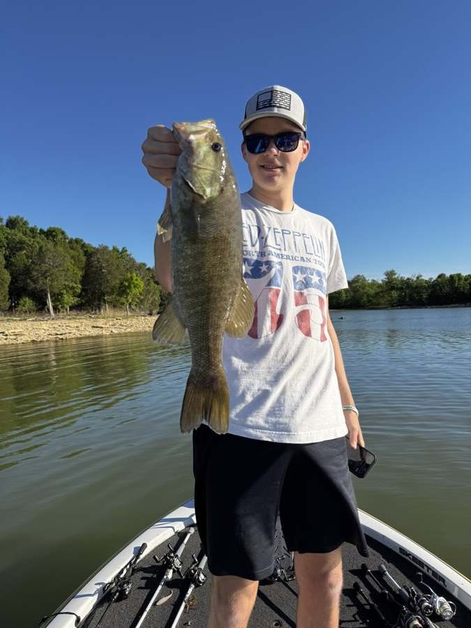
Aaron with a smallmouth off a rip-rap bank on a bluebird day.
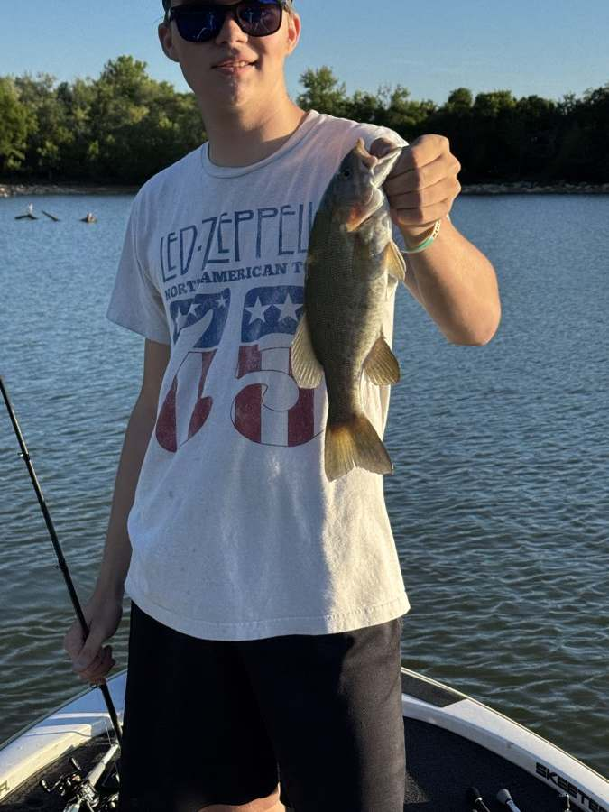
A second smallmouth an hour later, same stretch of bank.
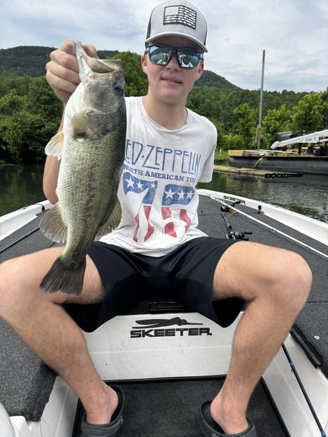
Tournament day. Caught on a black frog skipped under a dock.
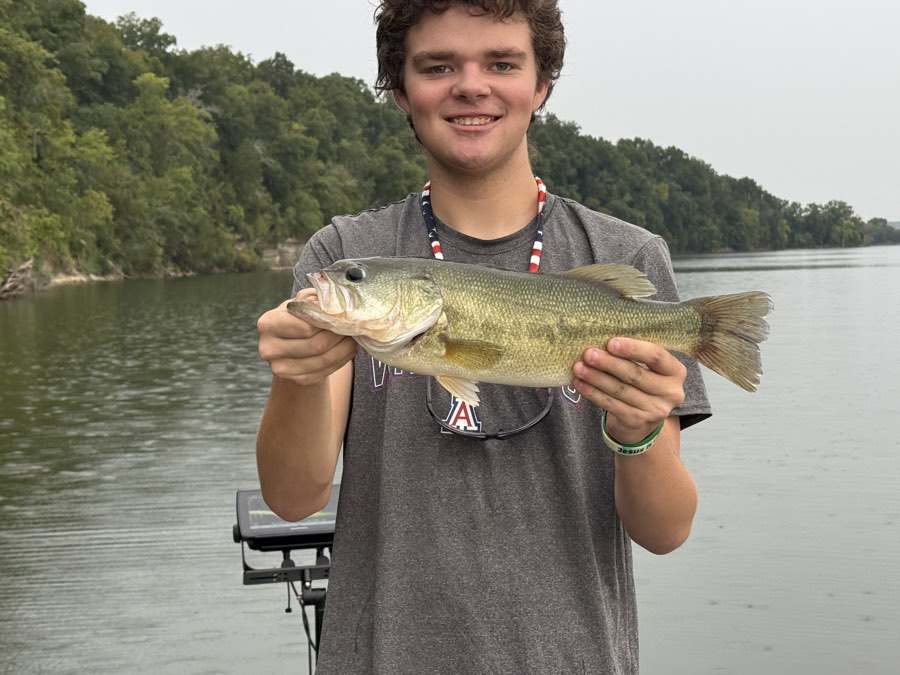
Close to three pounds — the best fish of that summer.
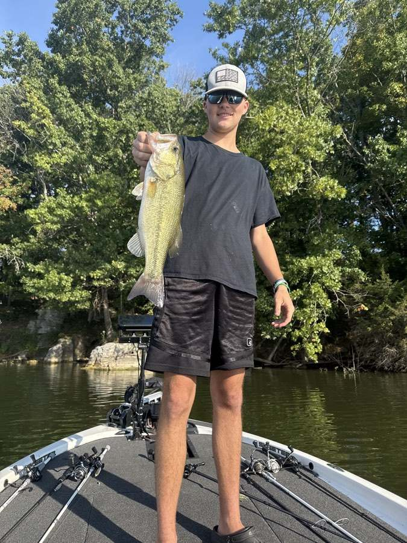
Caught on a Hag's Prickly Pear where two river channels meet.
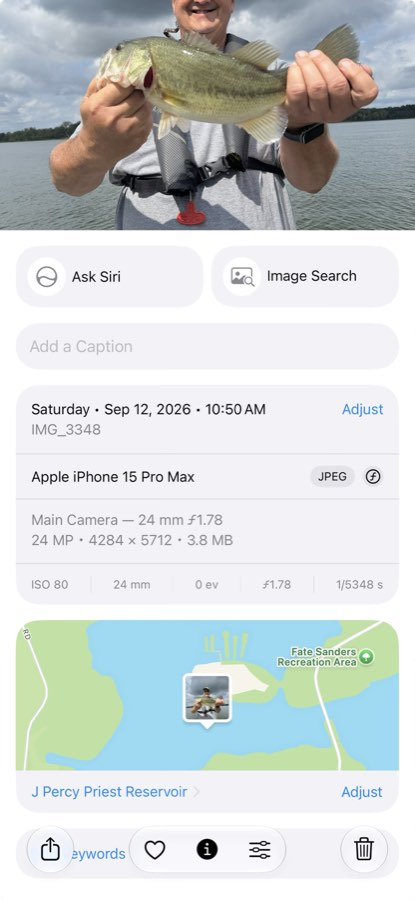
Two pounds off a point where Stewart Creek drops into the Stones River.
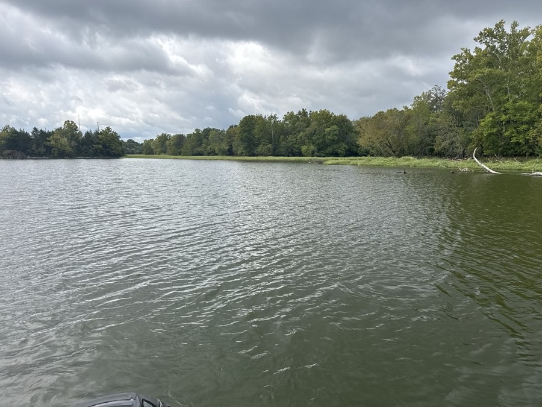
Looking back at the rip-rap point and the road bed, upper Stones River.
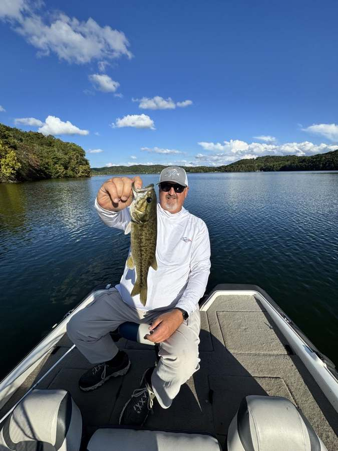
Watts Bar on a September evening.
| Date | Lake | Ramp | Trail |
|---|---|---|---|
| Sep 19, 2026 | J. Percy Priest | Four Corners Marina | Central |
| Sep 26, 2026 | Chickamauga | Dayton | East |
| Oct 3, 2026 | Old Hickory | Cedar Creek Marina | State Open |
| Oct 17, 2026 | Pickwick | Pickwick State Park | State Open |
| Nov 7, 2026 | Douglas | Dandridge Ramp | East |
| Dec 5, 2026 | Normandy | Barton Spring | Central |
| Feb 27, 2027 | Tims Ford | Winchester City Park | Central |
| Mar 6, 2027 | Watts Bar | Tom Fuller | East |
| Mar 20, 2027 | Dale Hollow | Sunset Marina | Central |
| Mar 21, 2027 | Dale Hollow | Sunset Marina | State Open |
| Apr 3, 2027 | Chickamauga | Rhea County North | East |
| Apr 17–18, 2027 | Chickamauga - Battle of Chickamauga | Dayton | State Open |
| Apr 24, 2027 | Center Hill Championship | Edgar Evins | Central |
| May 1, 2027 | Watts Bar Championship | Spring City | East |
| Jun 4–5, 2027 | Douglas Championship | Dandridge Ramp | State Open |